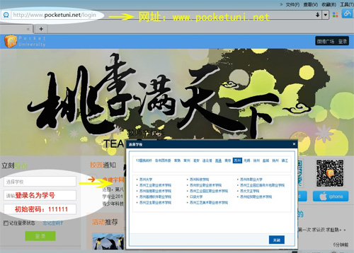
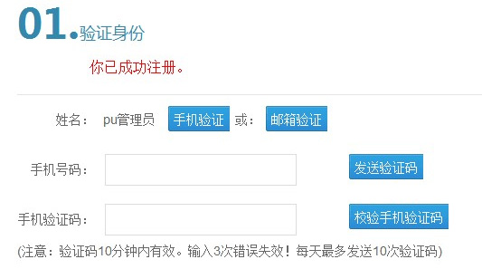
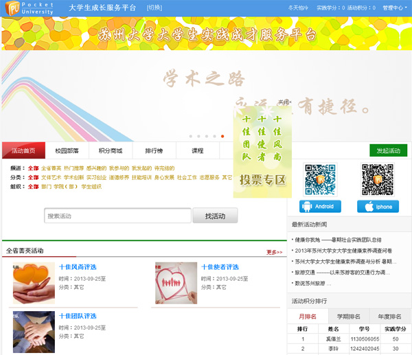
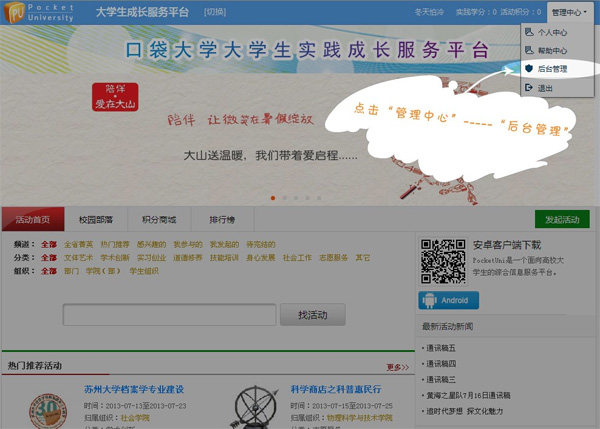
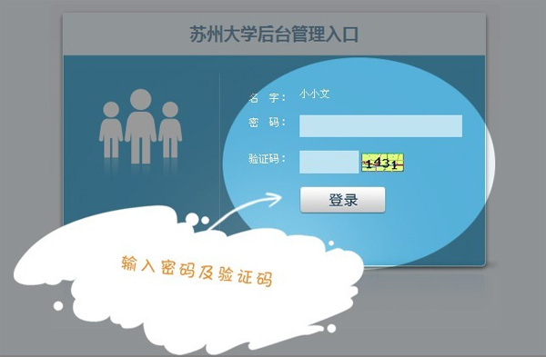
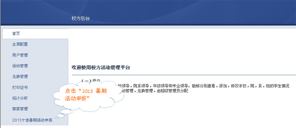
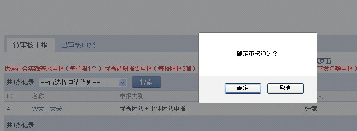
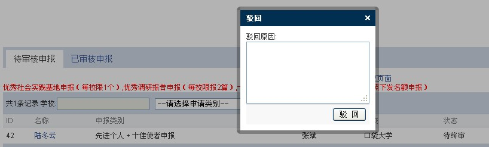
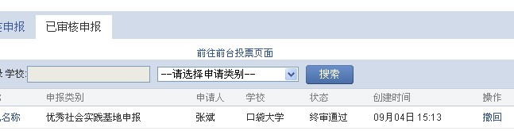

校团委审核流程
1.请登录网站：http://www.pocketuni.net,请按区域选择所属学校、输入用户名（团省委统一下发帐号）、密码（初始密码六个1）

2. 根据提示验证自己的用户信息，经过四步的验证后进入本校主站


3.在本校主站页面的右上角会看到“管理中心”，点击管理中心，会看到后台管理，点击后台管理

4.进入后台管理页面，输入密码（即为你本人的网站密码），输入验证码，按登录进入管理后台

5.在主页面的左侧最下方有“2XXX暑期活动申报”选项，点击该选项进入学校的一级审核页面

6.进入主页面将会看到本学校所有申报项目，你可以通过点击该项目名称查看项目内容，附件可以在线预览，在看完项目内容后，在项目的最右边有两个选项“通过”及“驳回”，你可以根据你看到的申报内容点击该两个选项，如果点击“驳回”将有备注框待填写，学生会在站内信看到驳回原因选择是否重新申请


7.由于部分奖项有数量限制，故在审核通过时请慎重处理，如确实发生误通过的状况，在团省委未审核的状况下，你可以在主页面中“通过的申报”中找出该项目点击最右方的“撤回”按钮，如果团省委已审核该项目将无法“撤回”
